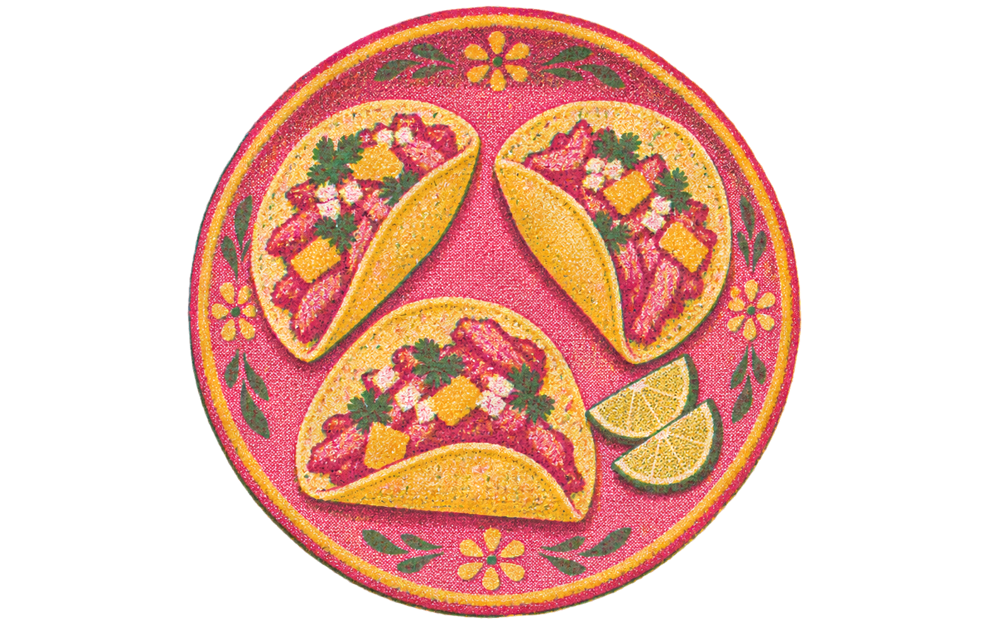

TacosTacos

Cerdo adobado al trompo con piña, cebolla y cilantro en tortilla de maíz.Spit-roasted marinated pork with pineapple, onion and cilantro on corn tortillas.
Carne de res a la plancha con cebolla asada y salsa verde.Grilled beef with charred onion and green salsa.
Tripa dorada y crujiente, con cebolla, cilantro y limón.Crispy golden beef tripe with onion, cilantro and lime.
EspecialidadesHouse Specials
Tortilla de harina con queso derretido y pastor con piña.Flour tortilla with melted cheese and al pastor pork with pineapple.
Tortilla de maíz hecha a mano con queso y carne asada.Handmade corn tortilla with cheese and grilled steak.
Tostada con queso gratinado, chorizo y salsa roja.Crispy tostada topped with melted cheese, chorizo and red salsa.
BebidasDrinks
Bebida fresca de arroz con canela.Chilled rice drink with cinnamon.
Bebida fresca de flor de jamaica.Chilled hibiscus flower drink.